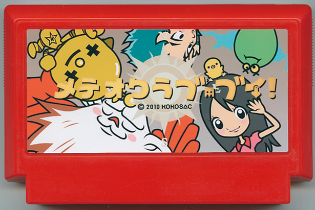

「 メテオクラブ・ブイ！ 」
KOKOSAC／アーティスト
Official Site
大嵐の夜、ドルフィンアイランド研究室の天才・サカガミ博士が謎の失踪。 研究室には、博士の”うしろに立つ少女”の写真と謎のリズム譜が書かれたメモが残されていました。博士の娘、電波人間・ひろみは、ツヨシ、カッちゃん、タイムス、さんぞう達と「メテオ倶楽部・V」を結成して、原因究明に動き出します。
さまざまな出会いと別れを繰り返し、成長していく少女とトモダチのものがたり。エンディングまで泣いてはいけません。